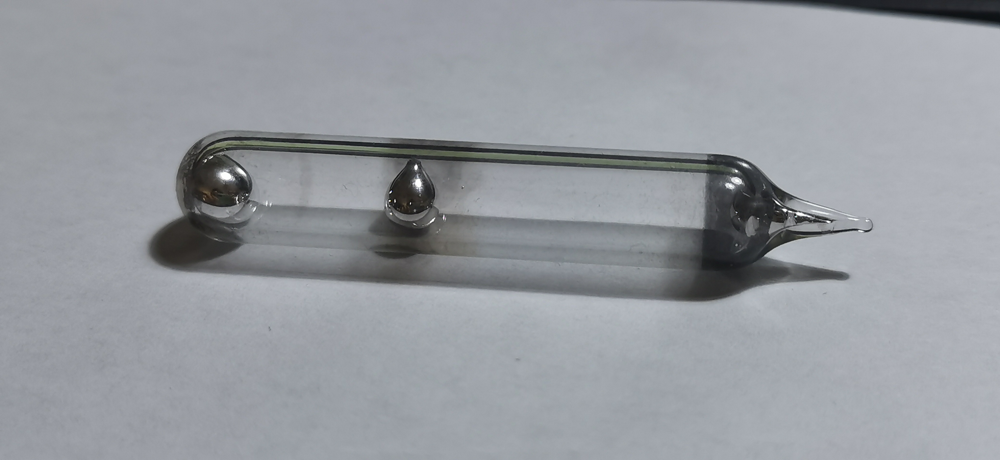
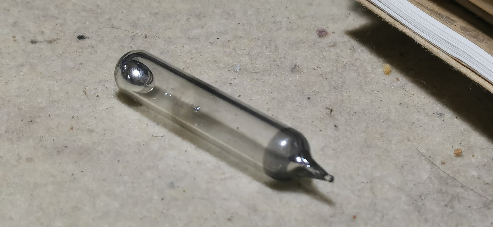

镓
2020.2 真空无水 99.9999% 来自马哥华  
液体：镓的熔点只有29.8℃，是仅次于汞、铯的第三低熔点非放射性金属。将镓拿在手心上熔化，然后让它在北京寒冷的气氛中再次凝固，是一件很好玩的事情。虽然传言称镓有生殖毒性，但多年来仍未得到认可，因此将镓直接放入手心相比于汞、铯显然安全得多。
真空：镓的吸附性很强，可以将几乎任何东西吸附到它的氧化膜上，因此在手心玩镓很容易导致氧化镓粘到皮肤上，需要肥皂洗净，造成了浪费。而且正是由于这个特点，镓的氧化膜会吸附在玻璃表面，使镓逐渐浸润玻璃，最终破壳而出。这是行业内不用玻璃瓶储存镓的重要原因之一。
将镓放入塑料瓶虽然保险，但破坏了它作为一件收藏品的观赏性；国内外很多玻封爱好者曾经尝试使用各种办法避免它，例如油封、水封或蒸馏后真空密封。我的这管玻封镓来自马哥华，采用真空密封的方法。虽然在封头处、中间段有明显的镓吸附现象，但仍然十足美观。